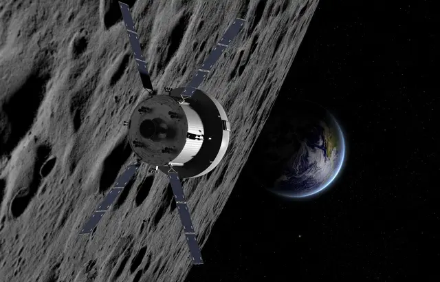

Espace : Avec le premier décollage de la mission Artemis, c’est aussi l’Europe qui décroche la Lune

C’est le grand test pour la mission Artemis qui doit marquer, cinquante ans après la dernière mission américaine, le grand retour de l’homme sur la Lune. Lundi, à 14h33 si la météo se montre clémente, un premier vaisseau Orion décollera de Cap Canaveral vers l’astre de la nuit. Il ne se posera pas sur la Lune, pas encore, il la dépassera, de 70.000 km, pour pousser le matériel au maximum, tester sa résistance et ses capacités lors de cette mission de 42 jours sans équipage.
L’heure est historique pour la Nasa et les Etats-Unis, sur le point redécrocher la Lune. Mais elle l’est aussi pour l’Europe. L’Agence spatiale européenne (ESA) fournit en effet le module de propulsion d’Orion, baptisé Module de service européen (ESM). Assemblé à Brême (Allemagne) par Airbus, avec la contribution de 10 pays membres, l’ESM est un cylindre d’environ quatre mètres de haut et de diamètre contenant les réservoirs du carburant propergol. Il est placé sous la capsule d’équipage d’Orion. Il en assure aussi l’alimentation électrique et la régulation thermique, et « approvisionnera les astronautes en eau et en oxygène lors des futures missions », précise Airbus Defence and Space.
C’est dire si l’Europe spatiale joue un rôle crucial dans cette aventure qui doit tenir la planète en haleine jusqu’à la fin de la décennie. « Sans l’ESM, la Nasa ne peut pas amener ses astronautes sur la Lune et les ramener en toute sécurité. C’est vraiment la première fois que la Nasa s’appuie sur nous pour un élément aussi critique d’une de ses missions phares », souligne, « reconnaissant », Joseph Aschbacher, le directeur général de l’ESA. Le bon fonctionnement de l’ESM lors de ce vol d’essai est « une responsabilité énorme », juge de son côté Jean-Marc Nasr, responsable des systèmes spatiaux chez Airbus. Et le décollage de ce lundi n’est qu’un avant-goût. L’ESA et Airbus, qui s’appuient sur la technologie éprouvée des véhicules de transfert automatique (ATV) qui ont approvisionné la Station spatiale internationale entre 2008 et 2015, fourniront un ESM-2 pour Orion 2 et ainsi de suite jusqu’à la mission Artemis 6. Avec à chaque lancement un pas de plus vers ce que David Parker, directeur de l’exploration humaine et robotique à l’ESA, appelle « le 8e continent ».
28/08/22 à 11h08